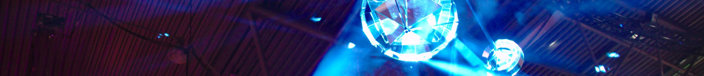

Der Chaostreff Osnabrück e.V. ist eine lockere Gruppe von Leuten mit Interesse in den Bereichen Sicherheit, Kryptografie, alternative Betriebssysteme, freie Software, Netzpolitik und vielen weiteren Themen. Interessierte sind bei unseren regelmäßigen Treffen jederzeit herzlich willkommen.
Wir veranstalten regelmäßig die chaOStalks. Die bisherigen Vorträge wurden alle aufgezeichnet und stehen auf der Plattform media.ccc.de zur Verfügung. Ein Klick auf den Namen der Vortragenden bringt dich zum Video.
Unsere stärker technisch orientierten Vorträge nennen wir "Chaos Colloquia".
Gemeinsam mit der Fachschaft Mathematik/Informatik organisieren wir das codingchaOS: Ein Wettbewerb, bei dem es darum geht, möglichst schnell, kurz und elegant kleine Programmieraufgaben zu lösen und dafür möglichst viele Punkte zu bekommen.
Wir sind ein eingetragener Verein und haben aktuell rund 15 Mitglieder. Außerdem freuen wir uns über Unterstützung, egal ob durch Geld, Wissen oder vielleicht sogar einen Raum. Wir träumen nämlich schon länger von einem eigenen Hackspace und suchen dafür Räumlichkeiten, die Internet bieten (so schnell wie möglich), möglichst erreichbar von Innenstadt und Bahnhof aus, bezahlbar und abschließbar sind. Toiletten und Heizung wären super, dann sind wir schon ziemlich happy. Also: Melde sich, wer was kennt!
Na gut, eine ganze Werkstatt haben wir noch nicht. Aber wir können Löten und haben Werkzeug, um Dinge zu reparieren oder auseinanderzunehmen - und bald hoffentlich auch einen 3D-Drucker.
Das Wiki ist intern. Damit du freigeschaltet wirst, müssen wir dich kennen. Komm doch einfach mal zu einem unserer Treffen, wenn du dich dafür interessierst.